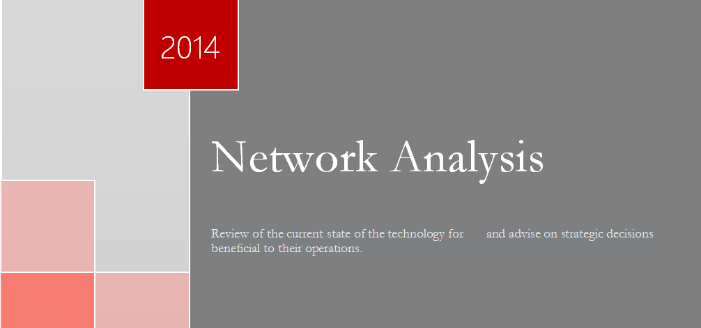
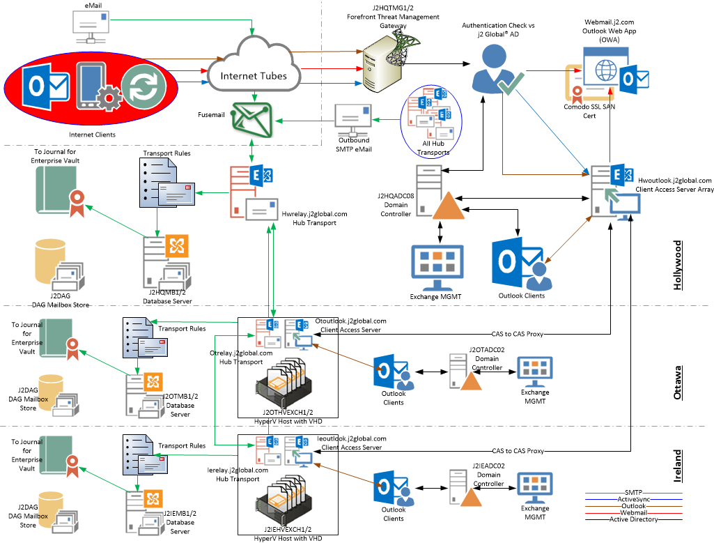
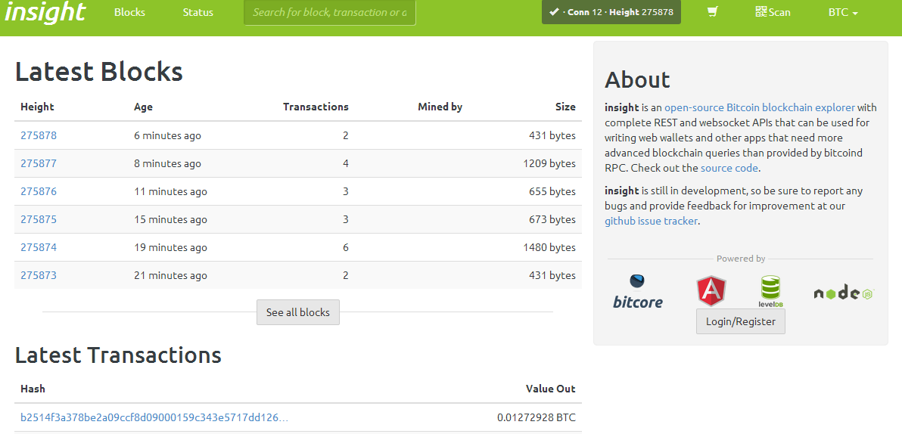

I run my own technology company. I'm a network architect, engineer, and administrator with 20 years of professional experience. I'm a generalist who is comfortable with Windows/Mac/Linux as well as routers/firewalls/switches. I'm interested in all kinds of building enterprise solutions, but my major focus is on managing cloud environments. I also have skills in other fields like network security, web development, and cryptocurrencies.
Entropy Technology, LLC
j2 Global Communications, Inc.
Viceroy Hotel Group (Formerly Kor Hotel Group, The Kor Group)
Northeastern University
Boston, Massachusetts
JUNE 1999
j2 Global, Inc.
Viceroy Hotels
Entropy Technology
Network Architecture / System Administration
95% percentile
Cloud Deployments - eg AWS, Salesforce, et al90% percentile
Development25% percentile
Windows95% percentile
Mac/Linux80% percentile
Network Devices - eg Routers, Firewalls, etc
45% percentile

NETWORK DESIGN

BIG MIGRATIONS

CODING
justins@entropytechnology.com
1231 N Formosa Ave #3
West Hollywood, CA 90046
United States of America
+1.424.226.6398
Created by JUSTIN